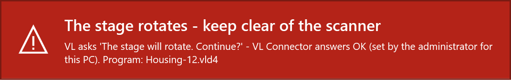

VL Connector for PolyWorks - Notes for IT
This page explains what VL Connector installs and runs, what it changes on a PC and why, so that IT can review it before use. Everything is readable source: Windows PowerShell 5.1 scripts, PolyWorks macros (MSCL), WPF window definitions (XAML), C# source for the few Windows functions PowerShell cannot call directly, and JSON settings. The only compiled file is the interface DLL that the installer builds once from the shipped C# source on the PC; nothing is compiled at run time.
Unofficial tool - not an official KEYENCE or InnovMetric product. License: MIT.
In short: installed by an administrator into C:\Program Files\VLConnector, which only administrators can change. Settings that matter for safety and for IT (the VL program, the automatic stage confirmation, dialog rules) can only be set by an administrator, for all users of the PC. No service, driver, scheduled task or PolyWorks plug-in; no internet access, no telemetry.
1. Components
| File | Runs | Purpose |
|---|---|---|
app\VLConnector.ps1 | when a user opens it (Start menu; the installer offers the wizard) | Settings window and setup wizard (WPF). |
app\Set-MachinePolicy.ps1 | only with administrator rights, from the Change (administrator) button (UAC prompt) | Small dialog that writes the machine policy (machine.json) and an Event Log entry. |
app\Agent.ps1 | scenario B, scanner PC: at logon (only if the user switched it on) or from the Start menu | Notification-area agent: starts the launcher in watch mode, sends STL files to the shared folder, opens the user's reports. Its network work runs in app\lib\AgentCycle.ps1. |
app\VLReplay.ps1 | started by the PolyWorks Measure macro or by the agent (-Watch) | Drives AI Replay in the VL Application (or follows a replay the operator started) and exports the STL. |
app\polyworks\*.pwmacro | inside PolyWorks, when the user presses the button | Evaluation, report, network station loop. |
app\polyworks\*.ps1 | started by the macros | Settings for the macros (Get-MacroContext), the verdict and CSV (Complete-Evaluation), the station's file work (Station-Step). |
app\interop\*.cs | compiled once by the installer | Windows and PolyWorks interface declarations, see section 7. |
bin\VLConnector.Interop.dll | loaded by the scripts | Built by the installer from app\interop\*.cs; carries the SHA-256 of its source in its file properties. |
app\lib\*.ps1 | loaded by the scripts above | Shared code, e.g. Install.ps1 (installation), Settings.ps1 (settings layers), StageWarning*.ps1 (warning window). |
Install.ps1, Uninstall.ps1 | by an administrator | Installation, update, removal. |
tools\Sign-Package.ps1 | by IT, optional | Signs the package with your certificate before deployment (section 6). |
tools\Build-Interop.ps1 | by the installer (or IT) | Builds the interface DLL from the source. |
No service, scheduled task, driver or browser extension is installed. The only autostart is the optional Startup-folder shortcut of the agent (per user, switched on by the user). While it waits for AI Replay, the agent's launcher looks at the VL windows of the user's session about every 0.25 s (window list and texts only).
2. Installation and trust model
Install (an administrator; or software deployment as SYSTEM):
Install.cmd interactive: a user starts it, Windows asks for administrator rights
Install.cmd -Quiet [-ConfirmStageMotion On|Off] [-MachineSettings <file>] [-InteropDll <file>] [-InstallDir <folder>] [-Force]Exit codes: 0 done, 1 failed, 2 cancelled, 740 administrator rights needed (-Quiet as a user), 1618 VL Connector is in use (a window, a scan or a station step runs in some session: retry later). Detection rule for deployment tools: C:\Program Files\VLConnector\install-info.txt (line VERSION=).
What the installer does, as administrator:
- Reads the package manifest (
MANIFEST.sha256, SHA-256 of every file) once into memory and checks every file; shows the package fingerprint (SHA-256 of the manifest) for comparison with the published one. - Refuses an install folder that is relative, a drive, Windows or a shared folder itself, a link, a folder with other content, the package folder itself, a folder whose parent folders users could delete, rename or re-permission, and an older version over a newer one (without
-Force). - Creates
<folder>.newwith an administrator-only ACL (no inheritance; SYSTEM and Administrators full control, Users read and execute; owner Administrators), copies only the files of the manifest and checks each copy against the manifest in memory. Only these files lose the "downloaded from the internet" mark. - Builds the interface DLL there (or takes
-InteropDll, a DLL IT built and signed from the same source, checked by its source hash), writes the PolyWorks button files andinstall-info.txt, keepsmachine.json. - Checks the staged copy strictly (extra files and links are errors) and its ACL, stops the VL Connector agents of all sessions, and swaps the folders by renaming. The previous version stays in
<folder>.oldand is put back when the swap fails. - Registers the event source "VL Connector" (Application log), applies
-MachineSettingsand-ConfirmStageMotion(checked before step 3), creates the Start menu entries for all users.
When a user starts Install.cmd, the package is first copied to the user's %TEMP% (an elevated process does not see mapped drives), the machine part runs elevated, and then the user's own shortcuts and settings are brought up to date. Started elevated or as SYSTEM, only the machine part runs; each user's part runs when that user next starts VL Connector.
Nothing writes into the program folder at run time - except machine.json, and only through the administrator tool (UAC).
1.0.0-rc10 installations (in C:\ProgramData\VLConnector, a folder users could change): the installer renames the folder away (nothing inside is followed), creates a new administrator-only folder in its place that holds only forwarders - small files that pass old PolyWorks buttons and old shortcuts on to the new folder - and deletes the old content without following junctions or links. From its machine.json only shared defaults are taken over, nothing only an administrator may set. The installer lists the users whose own settings had switched the automatic stage confirmation on; that is ignored now.
Check an installation: Install.cmd -Verify (no administrator rights needed) checks the files against the manifest, the ACL of the folder and its parents, and the interface DLL against its source - before it loads any installed code - then shows the status of the PC.
Remove: Start menu > Uninstall VL Connector, or Uninstall.cmd [-Quiet] [-RemoveUserData] (administrator). It runs from a temporary copy, stops the agents, removes the program folder (with .old), the Start menu entries, the agent startup shortcuts of all users, the forwarders and the event source, and checks that the folder is gone. At the old place of 1.0.0-rc10 an empty folder that only administrators can change stays behind, so nobody can place a macro where old PolyWorks buttons look; delete it once those buttons are gone. User data (-RemoveUserData: the settings and logs of the user who runs it), scans, reports, PolyWorks projects and the shared folder stay.
3. Settings and their lock
Four layers; a later one overrides single values of an earlier one:
app\config\defaults.json(product defaults),machine.json, sectiondefaults(starting values of IT; users may change them),%APPDATA%\VLConnector\settings.json(the user's own changes),machine.json, sectionpolicy(values IT locks for all users).
machine.json lies in the program folder, next to app\; its place never comes from an environment variable. Every value of every layer is checked against app\config\settings-schema.json (JSON types are taken literally: the text "true" is not true). A value that does not pass is ignored with a warning on the Setup page.
Only an administrator can set these keys, in defaults.json or the policy (anywhere else they are ignored): vl.exe, vl.args, vl.confirmStageMotion, vl.dialogRules, vl.testedVersions, vl.menuExportStl, vl.menuSaveAs, network.allowUncWorkspaces, safety.stageWarningSec, safety.stageSound, safety.watchAllowClose. Users see locked settings greyed out with "Set by the administrator for all users of this PC".
Example machine.json:
{
"policy": { "vl": { "confirmStageMotion": false }, "network": { "share": "\\\\fileserver\\metrology\\VLConnector" } },
"defaults": { "polyworks": { "keepPieces": "Nok" } }
}Every settings change is logged (%LOCALAPPDATA%\VLConnector\logs\Settings_<date>.log); a change of the machine settings also goes to the Event Log (event 1000), with the administrator and the user who asked for it.
4. Stage rotation safety
The VL Application asks the operator before the turntable moves ("The stage will rotate. Continue?", "Return the stage to the origin?"). By default the operator answers. An administrator can let VL Connector answer them (vl.confirmStageMotion in the policy: installer -ConfirmStageMotion On, or the Change (administrator) button). It is a setting of the PC, never of a user, a template or a command line: the launcher has no such parameter, template options cannot set it, and user settings are ignored.
VL Connector answers a stage question only when all of these hold, checked anew for each question:
- the policy is on (re-read at that moment: switching it off takes effect at once),
- the question is exactly one of the two texts above, and the VL version is listed in
vl.testedVersions, - somebody can be at the PC: the session is the active console session, not a remote (RDP) session, and the screen is not locked,
- the warning window is on screen (red, on top of all windows, never takes the keyboard focus, placed so it does not cover VL's question) and the sound has played; if Windows has not shown it within 1 s, VL Connector does not answer.

Every automatic answer is written to the Event Log, event 1100 (user, PC, program, the question). A question VL Connector could have answered but did not, and why, is event 1101 (warning); the operator answers it.
5. PowerShell requirements
- Windows PowerShell 5.1 (part of Windows 10/11) in FullLanguage mode. Every entry script checks the language mode first and stops with a clear message (and a result file for the PolyWorks macros) in ConstrainedLanguage mode.
- Execution policy: the Start menu entries and the PolyWorks macros start the scripts with
-ExecutionPolicy RemoteSignedand the full path ofpowershell.exein System32 (never one found on the search path);Install.cmduses-ExecutionPolicy Bypassfor the extracted package. A Group Policy execution policy always wins. - Background work (agent cycle, warning window, window jobs) runs script files in runspaces, never script text, so a script rule for the program folder covers it.
6. Code signature and application control
The package carries no personal code signature. Its integrity is shown instead by:
- the GitHub release built by GitHub Actions from a tag of the source repository (
.github\workflows\release.yml, actions pinned to commits), withSHA256SUMS.txt: the SHA-256 of the ZIP and the package fingerprint; - optionally a build attestation signed by GitHub, naming repository, workflow and commit (
gh attestation verify <zip> --repo <owner>/<repo>); MANIFEST.sha256inside, checked by the installer and byInstall.cmd -Verify.
AppLocker: the default script rules allow %PROGRAMFILES%\*, so VL Connector runs in FullLanguage there without a signature. For hash rules, generate them with Windows' own cmdlets after the installation:
Get-AppLockerFileInformation -Directory 'C:\Program Files\VLConnector' -Recurse -FileType Script, Dll |
New-AppLockerPolicy -RuleType Hash -User Everyone -Xml > VLConnector-applocker.xmlThe interface DLL is built on each PC and its file hash differs per PC (the compiler is not deterministic); allow it by path, or deploy one DLL that IT built and signed (below).
Your own signature (AllSigned, WDAC with a signer rule):
tools\Sign-Package.ps1 -Package <unpacked package> -Thumbprint <your code signing certificate>
-Zip <downloaded ZIP> -Sums SHA256SUMS.txt -InteropDll <folder>\VLConnector.Interop.dll
Install.cmd -Quiet -InteropDll <folder>\VLConnector.Interop.dllIt checks the ZIP and the manifest first and signs nothing when a file differs, signs the package's scripts with a timestamp (stops at the first error), checks that the installer still accepts the package, and can build and sign the interface DLL. The installer and -Verify accept signed scripts: they cut off the signature block and compare the rest with the manifest.
7. What your security software will see
Processes (all powershell.exe from System32, -NoProfile, -File with a full path; never -EncodedCommand, never downloaded code):
| Started by | Process | When |
|---|---|---|
PolyWorks iminspect.exe | powershell.exe ... app\polyworks\Get-MacroContext.ps1, Complete-Evaluation.ps1, Station-Step.ps1 | every Measure / evaluation / station poll |
PolyWorks iminspect.exe | powershell.exe -STA ... app\VLReplay.ps1 -LaunchFile ... -MarkerFile ... | Measure button |
PolyWorks iminspect.exe | cmd.exe /c DEL, MKDIR, start "" <pdf> | macro file work, opening the PDF |
explorer.exe (Startup shortcut) | powershell.exe -STA ... app\Agent.ps1 | logon, if the user switched it on |
| the agent | powershell.exe -STA ... app\VLReplay.ps1 -Watch -MarkerFile ... | while the agent runs |
| the settings window, UAC | powershell.exe ... app\Set-MachinePolicy.ps1 (elevated) | Change (administrator) |
| the installer | powershell.exe ... Install.ps1 -MachinePart (elevated), tools\Build-Interop.ps1 (C# compiler csc.exe, once), icacls.exe, takeown.exe (only for an rc10 folder) | installation |
Access to the VL process (VLApplication4.exe of the same user; KEYENCE files are never written, VL is never terminated):
OpenProcesswith onlyPROCESS_VM_OPERATION | PROCESS_VM_READ,VirtualAllocExof 1 KB,SendMessageTimeout(WM_GETCONTROLNAME)- VL itself writes the name of a WinForms control (e.g._replayScanButton) into that buffer -ReadProcessMemoryof that 1 KB andVirtualFreeEx. This is the standard technique of UI test tools for WinForms; noWriteProcessMemory, no remote thread, no code injection.- Window messages:
WM_GETTEXT,WM_SETTEXT(the program path in VL's file dialog),BM_CLICK(a dialog button found by its id, only when enabled),WM_CLOSE(only when the user chose to close VL). - UI Automation on VL's window, only to open its menus File > Export > STL and File > Save As.
SetForegroundWindow/AttachThreadInputonly towards VL, PolyWorks or VL Connector's own windows, andmouse_eventwith a zero-pixel move: Windows lets only the process with the last input change the foreground; the mouse does not move.
Other: the interface DLL is loaded from C:\Program Files\VLConnector\bin\ into the PowerShell processes. The PolyWorks COM interface is used only by Add to PolyWorks (wizard or settings), towards the PolyWorks the user has open; PolyWorks is never started. Network access only to the shared folder of scenario B (SMB). Event Log entries: source "VL Connector", events 1000, 1100, 1101.
VL Connector reads two VL files: %APPDATA%\KEYENCE\VL-800 Series\VL Application\VLOperation.log (when AI Replay finished) and %LOCALAPPDATA%\KEYENCE\...\RecentUsedTemplateFiles.xml (to find programs).
8. What is written where
| Path | Content | Written by |
|---|---|---|
C:\Program Files\VLConnector\ (and .old) | The program, the interface DLL, the PolyWorks button files, install-info.txt, machine.json | installer; machine.json also by the administrator tool |
C:\ProgramData\VLConnector\ | Only on PCs that had 1.0.0-rc10: the forwarders (administrator-only); after the removal of VL Connector an empty folder | installer, uninstaller |
C:\ProgramData\Microsoft\Windows\Start Menu\Programs\VL Connector\ | Start menu entries for all users | installer |
HKLM\SYSTEM\CurrentControlSet\Services\EventLog\Application\VL Connector | The event source (the only registry key) | installer |
%APPDATA%\VLConnector\settings.json | The user's own settings | settings window, wizard |
%LOCALAPPDATA%\VLConnector\ | logs\ (30 days), agent inbox\, outbox\ (with failed\), pending.txt, runs\, station work files, polyworks-layout\ (backups of the PolyWorks visual layout made before Add to PolyWorks) | all parts |
%TEMP% | Short-lived exchange files between the macros and the scripts (launch, marker, status, cancel, results) | macros, launcher |
%APPDATA%\Microsoft\Windows\Start Menu\Programs\Startup\VL Connector agent.lnk | Only if the user switches on Start the agent with Windows | settings window |
| PolyWorks visual layout of the user | Only on Add to PolyWorks: a ribbon tab with the button macro; the previous layout is saved first (Undo) | settings window, wizard |
Documents\VL Connector\ | Scans (STL) and, in scenario B, the received reports (marked as downloaded) | launcher, agent |
| PolyWorks workspace of the part | Measured pieces (copies of the template), Reports/Scans folders. Templates are never modified. | macros |
| Shared folder (scenario B) | See section 9 and Protocol | agent, station |
Nothing is written into the program folders of VL or PolyWorks; VL Connector installs no PolyWorks plug-in and changes no PolyWorks options. There is no internet access and no telemetry.
9. Shared folder of scenario B: rights
Give each group only what it needs (the check on page Network tests exactly this, by role):
| Folder | Scanner PCs | Station(s) |
|---|---|---|
| the shared folder itself | list, read | list, read |
jobs\ | create files; modify own files (CREATOR OWNER: modify) | modify |
reports\, status\ | read | modify |
programs.csv | read | read (modify for the people who maintain the list) |
work\, processed\, failed\ | - | modify |
Create the subfolders once (or let a station create them on its first test). Workspaces on network paths in programs.csv are refused unless the policy allows them (network.allowUncWorkspaces). Both sides treat each other's files as untrusted input (section 3 of the Protocol).
10. Tests
In the source repository: tests\Run-Tests.ps1 -Static -Unit checks syntax, encodings, forbidden content and the rules above (language check first, no compiler outside the interop loader, full PowerShell path) and runs the unit tests: settings layers and lock, stage safety, verdict, file protocols, network, installation. -Launcher runs the launcher against a simulated VL Application (tests\FakeVL), including a safety matrix (the policy off must never confirm, whatever users, templates or files say). GitHub Actions runs all of them and a real installation as administrator (Program Files, ACL, a standard user trying to write, event log, a signed package, update, removal) for every change (.github\workflows\ci.yml). The acceptance checklist covers the live tests at the scanner.